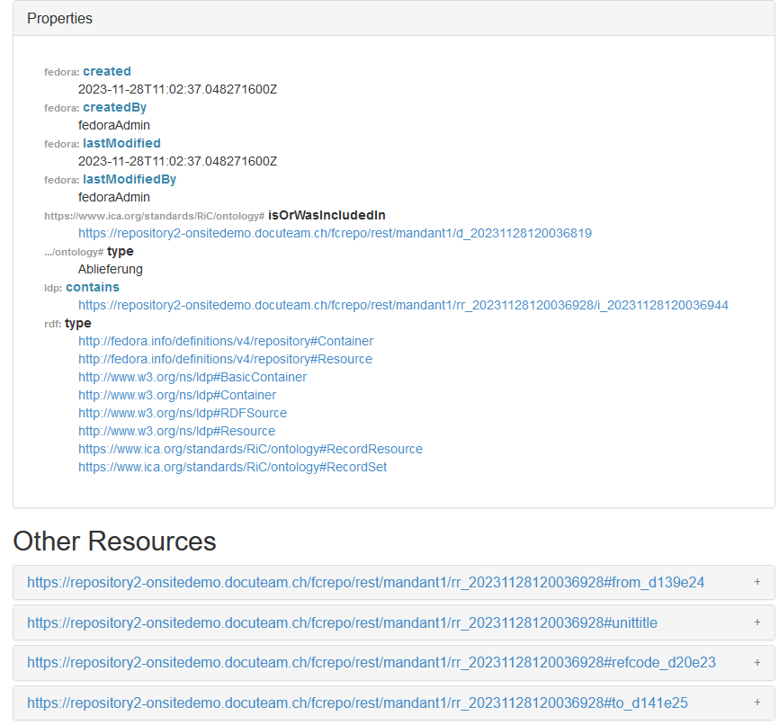

FCREPO-3932 Camel toolbox does not correctly update triplestore data when using hash URIs
Description
In docuteam’s data model, we store all metadata as RDF data in Fedora 6. For the URIs of many metadata subjects, we use hash URIs. This leads to problems when updating our triplestore using camel-toolbox, as deleted or updated triples are not indexed correctly.
Example:
The Fedora container https://repository2-onsitedemo.docuteam.ch/fcrepo/rest/mandant1/rr_20231128120036928 contains metadata of a "Record Resource", some of it created by Fedora, some by our application (using the rico vocabulary)
However most descriptive metadata, for example the title of the Record Resource, is stored using a separate RDF subject:
This second RDF subject has a hash URI, so from point of view of Fedora and OCFL it is stored together with the main Record Resource. We do this so we don't need to create a large number of Fedora objects just to store metadata (first tests where we stored all the metadata elements in separate OCFL objects we encountered preformance problems).

This works fine when creating and indexing new resources, however we encounter problems when indexing changed or deleted metadata in our Fuseki triplestore (using Camel toolbox). In order to update metadata, we send a PUT request to Fedora containing the new version of the metadata. This request contains both the new version of the data for the main Record Resource and the data for the additional metadata elements stored using hash uris. Data in F6 is correctly updated, however the indexing by fcrepo-camel is incomplete.
When fcrepo-camel sends updates to a triplestore like Fuski, the update request contains both a DELETE statement (deleting the existing triples belonging to the Fedora object) and an INSERT statement (adding the new triples to the triplestore), see https://github.com/fcrepo-exts/fcrepo-camel/blob/main/src/main/java/org/fcrepo/camel/processor/SparqlUpdateProcessor.java#L57
However, the code to construct the DELETE statement (see https://github.com/fcrepo-exts/fcrepo-camel/blob/main/src/main/java/org/fcrepo/camel/processor/ProcessorUtils.java#L72)) deletes only the triples of the main Record Resource (which have the URI of the Fedora objects as their subject) and not the triples belonging to the additional metadata subjects.
On the other hand, the INSERT statement works correctly, as it sends all RDF metadata stored in the Fedora object, which includesthe hash-uri triples. This leads to the following behavior:
- Additional metadata stored using hash-uris is correctly added to the triplestore
- Deleting metadata has no effect in the triplestore (as the delete statement does not catch the triples belonging to the hash-uri subject)
- Changing metadata will add the new metadata, but not delete the old version
Are there any recommendations or best-practives from other organisations using hash-uris in F6 how to best solve this issue? We thought of multiple ways to fix this:
When constructing the DELETE statement in fcrepo-camel, search and delete all triples where the subject URI included the URI of the Fedora object which is update.
Such a query could looks as follows:
As this solution uses string matching, we fear that it will negatively impact performance.
Construct DELETE statement based on our data model
If we don't want to use string matching, we could construct the DELETE query based on our data model. As we know which RDF subjects are stored using hash uri and which as separate Fedora objects, we could construct a query deleting all triples belonging to hash-uri which are stored as part of the main record resource.
However such a solution would of course not work for any other Fedora users with a different data model.
Find out the hash-uris from the new data to be inserted in the triplestore
This will not work when metadata elements are deleted in the new version of the data. In this case the RDF data sent from Fedora to camel-toolbox will not contain the hash uris of the deleted metadata. In order to find out the hash-uris we need to delete, we would need to query the old version in Fedora (assuming automatic versioning is used).
Attachments
Comments (3)
Raw Jira JSON

Basil Marti We discussed this in the Tech Meeting today. We can go ahead and solve the problem with the FILTER (strstarts(str(?s), 'fedora-object-uri#')) statement that matches on the Fedora URI